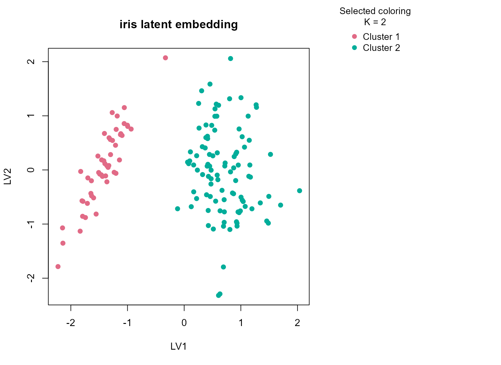
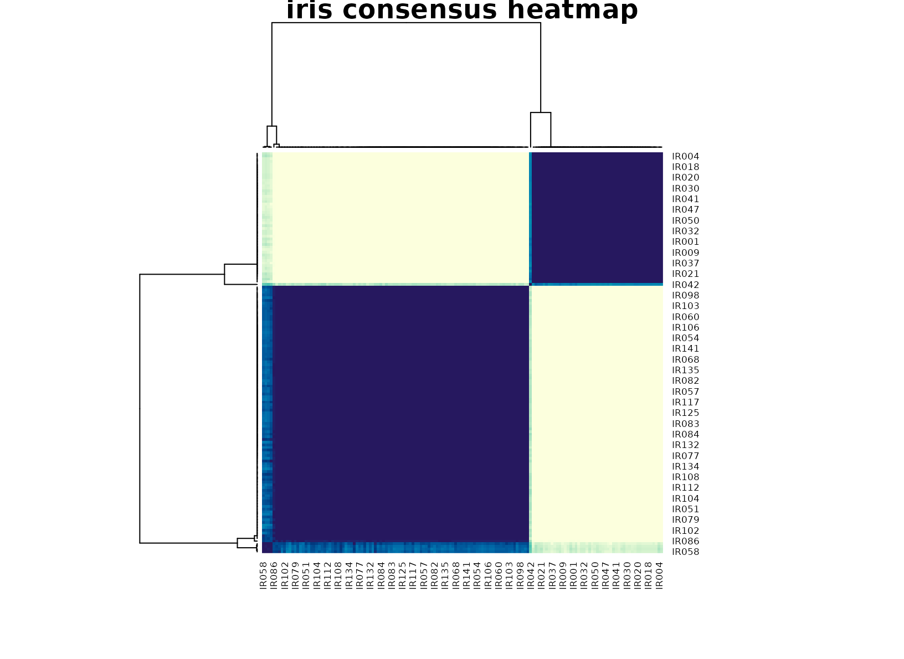

Background
iris is the canonical morphology clustering dataset. It
is mostly continuous, but it is still useful in uccdf
because we can add a small ordinal feature and ask how the consensus
workflow behaves on a familiar real benchmark. Because the species
labels are known, the dataset is also useful for showing what a
stability-first clustering summary does when the supervised class count
and the most reproducible unsupervised structure are not identical.
Objective
The goal is to inspect whether uccdf recovers a stable
species-related structure from the morphology table and to compare the
resulting clusters against the known Species label, with
special attention to whether the method prefers the strongest coarse
split or the full three-species partition.
Data preparation
iris_df <- iris
iris_df$sample_id <- sprintf("IR%03d", seq_len(nrow(iris_df)))
iris_df$petal_band <- ordered(
cut(iris_df$Petal.Length, breaks = c(-Inf, 2.5, 5, Inf), labels = c("short", "medium", "long")),
levels = c("short", "medium", "long")
)
analysis_iris <- iris_df[, c("sample_id", "Sepal.Length", "Sepal.Width", "Petal.Length", "Petal.Width", "petal_band")]
head(analysis_iris)
#> sample_id Sepal.Length Sepal.Width Petal.Length Petal.Width petal_band
#> 1 IR001 5.1 3.5 1.4 0.2 short
#> 2 IR002 4.9 3.0 1.4 0.2 short
#> 3 IR003 4.7 3.2 1.3 0.2 short
#> 4 IR004 4.6 3.1 1.5 0.2 short
#> 5 IR005 5.0 3.6 1.4 0.2 short
#> 6 IR006 5.4 3.9 1.7 0.4 shortAnalysis
fit_iris <- fit_uccdf(
analysis_iris,
id_column = "sample_id",
candidate_k = 1:5,
n_resamples = 24,
n_null = 59,
seed = 606
)
fit_iris$selection
#> $alpha
#> [1] 0.05
#>
#> $global_p_value
#> [1] 0.01666667
#>
#> $null_family
#> [1] "independence_marginal_null"
#>
#> $detected_structure
#> [1] TRUE
#>
#> $best_exploratory_k
#> [1] 2
#>
#> $best_supported_k
#> [1] 2
select_k(fit_iris)
#> k stability null_mean null_sd stability_excess z_score p_value
#> 1 2 0.9532483 0.2018968 0.02169189 0.7513515 34.637416 0.01666667
#> 2 3 0.7057517 0.1822817 0.02413765 0.5234700 21.686856 0.01666667
#> 3 4 0.6396007 0.2756831 0.03575124 0.3639176 10.179157 0.01666667
#> 4 5 0.6845507 0.3860105 0.04028798 0.2985402 7.410153 0.01666667
#> supported objective
#> 1 TRUE 34.498787
#> 2 TRUE 21.467134
#> 3 TRUE 8.901898
#> 4 TRUE 6.088266Results
iris_assign <- merge(
augment(fit_iris),
iris_df[, c("sample_id", "Species", "petal_band", "Sepal.Length", "Sepal.Width", "Petal.Length", "Petal.Width")],
by.x = "row_id",
by.y = "sample_id",
all.x = TRUE
)
head(iris_assign)
#> row_id cluster confidence ambiguity exploratory_cluster
#> 1 IR001 1 0.9947671 0.005232863 1
#> 2 IR002 1 0.9940476 0.005952381 1
#> 3 IR003 1 0.9941043 0.005895692 1
#> 4 IR004 1 0.9943311 0.005668935 1
#> 5 IR005 1 0.9937642 0.006235828 1
#> 6 IR006 1 0.9937642 0.006235828 1
#> exploratory_confidence exploratory_ambiguity assignment_mode selected_k
#> 1 0.9947671 0.005232863 selected 2
#> 2 0.9940476 0.005952381 selected 2
#> 3 0.9941043 0.005895692 selected 2
#> 4 0.9943311 0.005668935 selected 2
#> 5 0.9937642 0.006235828 selected 2
#> 6 0.9937642 0.006235828 selected 2
#> exploratory_k Species petal_band Sepal.Length Sepal.Width Petal.Length
#> 1 2 setosa short 5.1 3.5 1.4
#> 2 2 setosa short 4.9 3.0 1.4
#> 3 2 setosa short 4.7 3.2 1.3
#> 4 2 setosa short 4.6 3.1 1.5
#> 5 2 setosa short 5.0 3.6 1.4
#> 6 2 setosa short 5.4 3.9 1.7
#> Petal.Width
#> 1 0.2
#> 2 0.2
#> 3 0.2
#> 4 0.2
#> 5 0.2
#> 6 0.4
round(prop.table(table(iris_assign$cluster, iris_assign$Species), margin = 1), 3)
#>
#> setosa versicolor virginica
#> 1 1.0 0.0 0.0
#> 2 0.0 0.5 0.5
aggregate(
cbind(Sepal.Length, Sepal.Width, Petal.Length, Petal.Width, confidence) ~ cluster,
data = iris_assign,
FUN = function(x) round(mean(x, na.rm = TRUE), 3)
)
#> cluster Sepal.Length Sepal.Width Petal.Length Petal.Width confidence
#> 1 1 5.006 3.428 1.462 0.246 0.989
#> 2 2 6.262 2.872 4.906 1.676 0.987
plot_embedding(fit_iris, color_by = "selected", main = "iris latent embedding")
plot_consensus_heatmap(fit_iris, main = "iris consensus heatmap")
Discussion
The selected two-cluster result is informative precisely because the benchmark has three known species. The cluster-by-species table usually shows that one consensus group is almost entirely setosa, while the second mixes versicolor and virginica. That means the workflow is prioritizing the strongest morphology boundary in the data, namely the clean separation of setosa from the other two species, rather than forcing the supervised class count into the unsupervised summary.
This is useful in practice because many real tables do not support a
uniquely correct K. A stable consensus summary can
legitimately prefer a coarser partition when the finer split is weaker
or less reproducible, and iris demonstrates that behavior
in a very transparent way.
Interpretation
That behavior should not be treated as a failure. On
iris, uccdf is telling us that the most
reproducible structure in the morphology table is a two-group
separation, roughly corresponding to setosa versus non-setosa. This is a
clean example of stability-first clustering producing a defensible
reduced summary, even when a finer biologically known label set
exists.